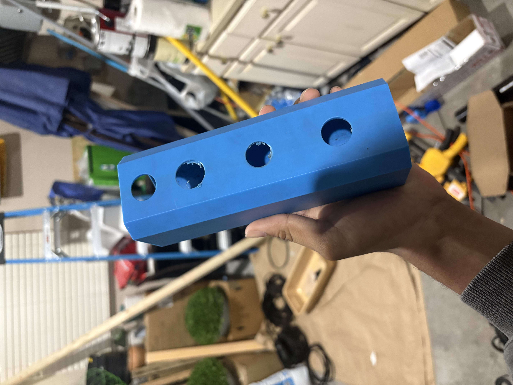

A mobile patient lift, built from an off-the-shelf 3-ton hydraulic cylinder jack mechanism paired with a custom aluminum frame, caster base, and a sling suspended from carabiners. The 3D-printed parts are the custom fittings and mounts connecting the hydraulic jack hardware to the frame - the pieces that don't exist as a standard part and had to be designed to fit.
I modeled the whole lift in CAD before building anything, then built it from aluminum tube: cutting each piece to length, test-fitting the frame, and painting the tubes before final assembly. I also printed a jig to help with the build, and not everything went perfectly - one tube was miscut and ended up as scrap.
Most of the custom printed work is where the off-the-shelf hardware meets the frame: the mount for the sling, the mount for the T-handle, and the fittings that connect the hydraulic jack to the structure. Each of those was designed around the real parts, since there was no standard piece that would fit.
The presentation below walks through the project, and the gallery shows the final CAD, the build process, and the finished, painted lift.

1 / 10
Credit & Copyright: Processing - Robert Gendler, Roberto Colombari; Data - Hubble Tarantula Treasury, European Southern Observatory